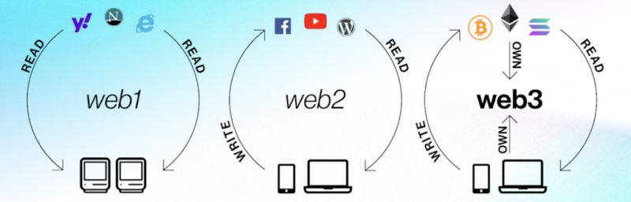

Web 3.0

Web3 (or Web 3.0) is the proposed next generation of the internet, characterized by decentralization, blockchain technology, and user ownership of data. Moving away from centralized corporate control (Web2), Web3 utilizes peer-to-peer networks to enable "read-write-own" interactions, where users control their digital identity, assets, and data.